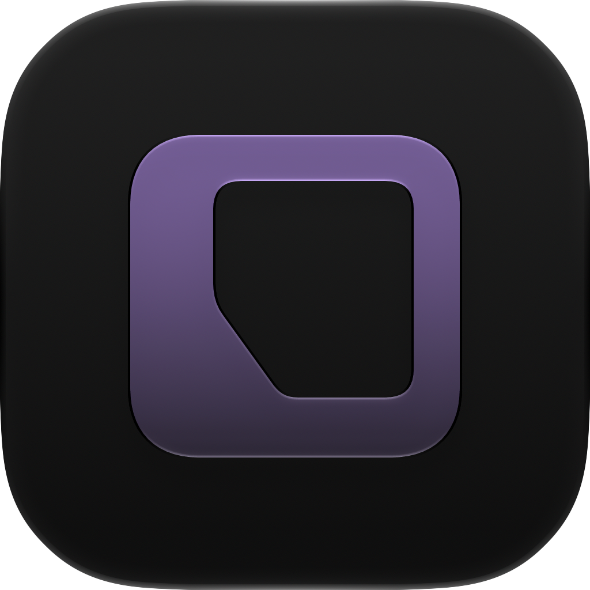
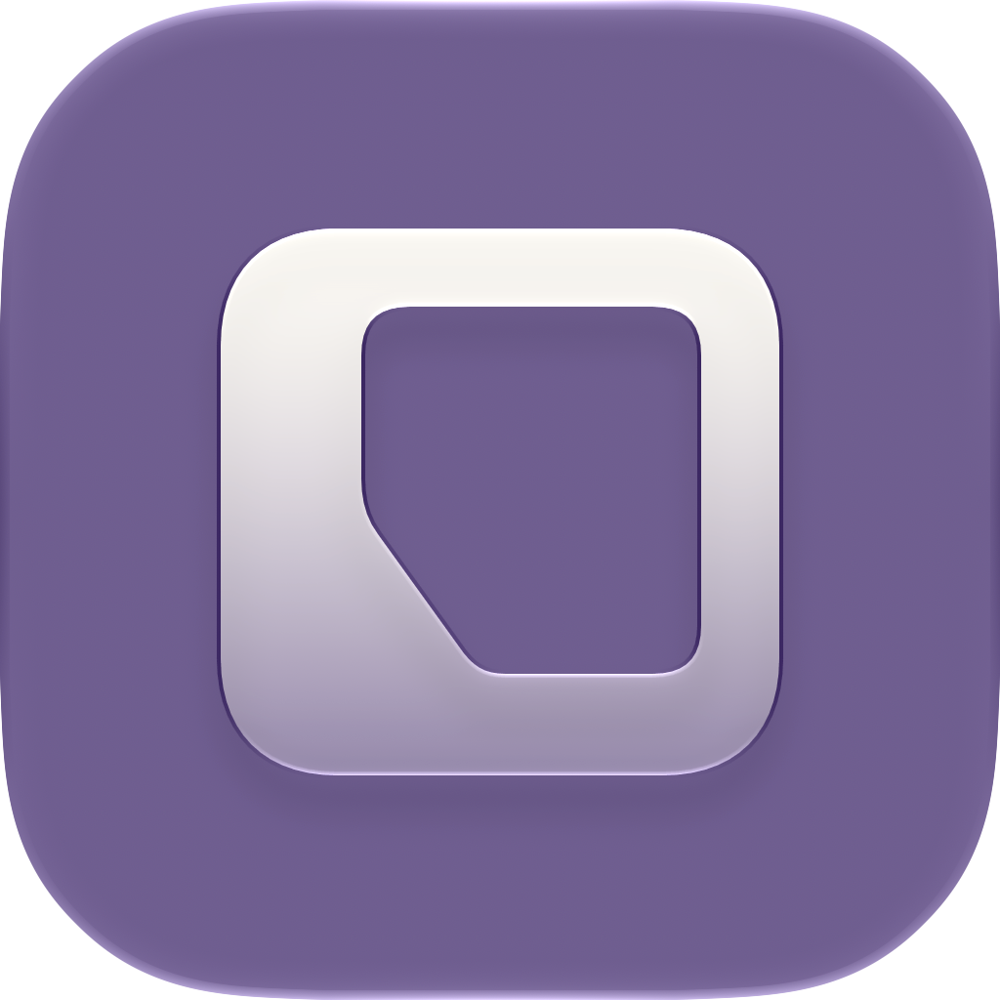

<!doctype html>
<html lang="zh-Hans">
<meta charset="utf-8">
<meta name="viewport" content="width=device-width,initial-scale=1">
<title>CheckLine · 深色更轻</title>
<style>
  *{box-sizing:border-box}body{margin:0;background:#24212b;color:#f0eaf6;font:15px/1.55 -apple-system,BlinkMacSystemFont,"Segoe UI",sans-serif}
  main{max-width:760px;margin:auto;padding:32px 24px 28px}.brand{font-size:12px;letter-spacing:.12em;color:#aba0b8}h1{font-size:25px;letter-spacing:-.035em;line-height:1.2;margin:9px 0 12px;font-weight:600}p{margin:0;color:#aba0b8;font-size:13px}
  .pair{display:grid;grid-template-columns:1fr 1fr;gap:16px;margin-top:24px}figure{margin:0;min-width:0}.stage{background:#302b39;border-radius:22px;aspect-ratio:1;display:grid;place-items:center;padding:22px}.hero{width:100%;height:auto;display:block}
  figcaption{font-size:13px;font-weight:550;display:flex;justify-content:space-between;align-items:baseline;margin:10px 1px 0;gap:4px}small{font-size:11px;font-weight:400;color:#aba0b8}.sizes{display:flex;align-items:center;gap:14px;margin-top:17px;height:60px}.thumb{display:block;flex:none}.s60{width:60px;height:60px}.s32{width:32px;height:32px}.size-label{font-size:11px;color:#aba0b8;line-height:1.4}
  .family{margin-top:30px;display:flex;align-items:center;justify-content:center;gap:18px;padding:20px;background:#302b39;border-radius:20px}.family img{width:60px;height:60px}.family span{font-size:12px;color:#c6bbd1}footer{margin-top:24px;font-size:11px;color:#aba0b8}a{color:#d2bce9;text-underline-offset:3px}footer a{display:inline-block;margin-top:10px}
  @media(min-width:640px){main{padding:44px 40px 32px}.stage{padding:42px}}
  @media(max-width:350px){main{padding:24px 16px}.pair{gap:12px}.stage{padding:14px}figcaption{display:block}figcaption small{display:block}}
</style>
<main>
  <header><span class="brand">CHECKLINE</span><h1>深色，也留一点光。</h1><p>紫灰底，浅紫玻璃；边界清楚，整体更轻。</p></header>
  <section class="pair" aria-label="深色前后对照">
    <figure><div class="stage"></div><figcaption>上一稿<small>自动深色</small></figcaption><div class="sizes"><span class="size-label">60 / 32<br>px</span></div></figure>
    <figure><div class="stage"></div><figcaption>修正版<small>独立深色材质</small></figcaption><div class="sizes"><span class="size-label">60 / 32<br>px</span></div></figure>
  </section>
  <section class="family" aria-label="当前浅深色配对"><span>同一轮廓</span></section>
  <footer>Apple Icon Composer 官方静态渲染，尚未实装。<br><a href="index.html">查看浅深色整套</a></footer>
</main>
</html>
